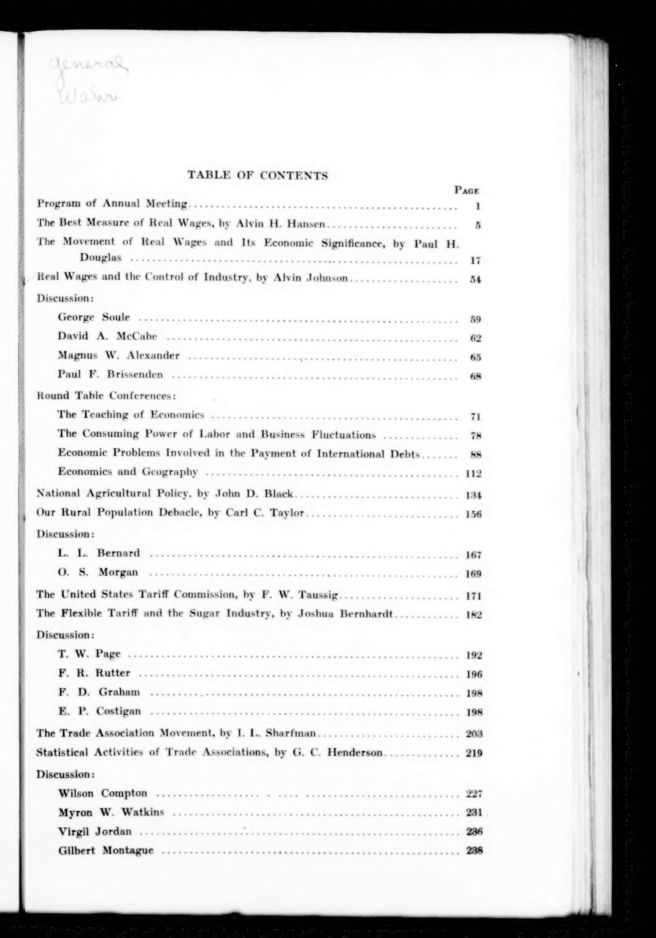

Douglas, 1925: quanto subiu o salário real americano?
Leitura: 7 min
Douglas reconstrói o custo de vida e os rendimentos anuais nos Estados Unidos desde 1890 e conclui que os ganhos reais vieram quase todos depois de 1914, sobretudo depois de 1919.


Em 1924, um operário industrial americano empregado podia comprar, em média, 28% mais do que na década de 1890. A estimativa é de Paul H. Douglas, da Universidade de Chicago, no trabalho mais longo do suplemento, com 37 páginas e várias tabelas. Douglas pede que o resultado seja lido com uma advertência: quase todo esse ganho veio depois de 1914, e a maior parte depois de 1919.
Como medir o custo de vida antes de 1914?
O salário real exige dividir rendimentos por um índice de custo de vida, e o problema, diz o autor, é que só a partir de 1914 há dados de primeira mão sobre todos os itens importantes do orçamento operário: os índices do Bureau of Labor Statistics, da comissão de Massachusetts sobre itens de primeira necessidade e do National Industrial Conference Board. Para o quarto de século anterior, havia apenas preços de varejo de trinta alimentos de 1890 a 1907 e de quinze nos sete anos seguintes, além de carvão, gás e alguns móveis.
Estudos anteriores, como os de Rubinow, de F. W. Jones e o do próprio Douglas com Miss Lamberson, usaram os preços dos alimentos como substituto do custo de vida. Douglas aponta dois riscos: supor que os quinze alimentos com série contínua representem bem os trinta, e supor que alimentos representem o custo de vida. Ele compara índices de atacado de conjuntos crescentes de mercadorias e conclui que os treze alimentos de série contínua, carregados de carne bovina e suína, subiram mais depressa que os alimentos em geral. Constrói então um índice de atacado com pesos tirados de orçamentos operários, converte-o em varejo pela relação observada entre preços de varejo e atacado e faz o mesmo para outros grupos de despesa, ponderados pelos gastos das famílias segundo o relatório do Commissioner of Labor.
Para depois de 1914, usa a série do Bureau of Labor Statistics, mas com uma modificação proposta por George E. Barnett: em vez de ponderar grupos de despesa, pondera o índice total de cada cidade pela população, e interpola os meses com as séries de Massachusetts e do Conference Board.
De onde vêm os rendimentos?
Douglas trabalha com rendimentos anuais médios, não com taxas de salário. Na indústria de transformação, usa os censos de manufatura e interpola os anos intermediários com relatórios estaduais de Massachusetts, Connecticut, Nova Jersey, Pensilvânia, Ohio, Iowa, Wisconsin e Carolina do Sul; depois de 1915, com dados do Bureau of Labor Statistics e do departamento do trabalho de Nova York. Calcula também rendimentos de ferroviários, a partir dos relatórios da Interstate Commerce Commission e de comissões estaduais, de funcionários do governo em Washington, carteiros, professores, ministros religiosos e trabalhadores de escritório. Ficam de fora, por falta de dados, mineiros de carvão, trabalhadores agrícolas, da construção e do comércio.
O que os números mostram?
O índice geral é obtido ponderando cada grupo pelo número de empregados em cada censo, com a média de 1890 a 1899 como base. Dividindo os rendimentos nominais pelo custo de vida, Douglas chega ao seu resumo: em 1924 os operários industriais empregados podiam comprar cerca de 28% mais do que na década de 1890, e os ferroviários um pouco menos. Até 1914, à exceção dos professores, quase não houve aumento do poder de compra em relação aos anos 1890. A maior parte dos ganhos ocorreu depois de 1919 e continuou de 1920 a 1923, inclusive em dois anos de negócios ruins, com queda da produção e aumento do desemprego.
Os trabalhadores de escritório teriam perdido terreno não só em termos relativos, mas talvez absolutos: seu índice de rendimento real, embora bem acima do de 1917 a 1920, ficaria cerca de 5% abaixo da média dos anos 1890. Ministros e professores ganharam muito em 1921, quando seus salários nominais subiram enquanto os preços caíam. Entre os ramos industriais, em 1914 mais da metade dos grupos tinha rendimentos reais abaixo da média dos anos 1890.
O autor acrescenta fatores que não aparecem nos índices. O tamanho da família diminuiu, e a proporção de dependentes caiu: menos crianças em relação aos adultos e mais mulheres com ocupação remunerada, de 17,4% das mulheres com mais de dez anos em 1890 para 21,1% depois. Em sentido contrário, a jornada mais curta deu tempo livre, mas serviços que no campo custavam pouco foram comercializados nas cidades.
Por que os salários subiram?
O principal fator, segundo Douglas, foi o grande aumento da produção. Mas em 1923 o índice de produção estava em pelo menos 152, bem acima do índice de rendimentos reais, e ele lista explicações para a diferença: a melhora das relações de troca dos produtos agrícolas de 1899 a 1919, com o índice de Hansen mostrando ganho de 32% do poder de compra dos produtos agrícolas; a parcela maior da produção industrial dedicada a bens de capital; uma parcela maior da renda indo para comercialização e vendas; e o aumento do número de assalariados de escritório. Já o salto recente teria sido ajudado pela queda, de 1919 a 1923, do valor de troca dos alimentos na fazenda, e pela redução da imigração durante a guerra e sua restrição pelas leis de 1921 e 1924.
Quais são as consequências?
A primeira é a poupança operária. Os depósitos em instituições de poupança passaram de 8,4 bilhões de dólares em 1912 para 20,8 bilhões em 1924, ou de 89 para 186 dólares por habitante, um ganho de 109%; descontado o custo de vida, o ganho real per capita teria sido de cerca de 25%. Cresceram também o seguro de vida e a compra de ações das empresas pelos próprios empregados, cuja importância, diz o autor, provavelmente foi exagerada. A segunda é a política sindical, que para a maior parte dos grupos organizados teria se tornado um negócio voltado a obter uma parcela maior da produção. A terceira é o desemprego: um dos problemas mais intrigantes seria a manutenção de salários e rendimentos desde 1923 diante de uma força crescente de desempregados.
“O padrão de vida dos trabalhadores não é a unidade constante que Ricardo supôs” (The workers’ standard of life is not the constant unit which Ricardo assumed)
Quanto ao futuro, Douglas prevê que a fonte recente de ganho, a queda das relações de troca agrícolas, deve se esgotar. Com o crescimento da população, o preço relativo dos produtos agrícolas, a renda da terra e o preço da terra tenderiam a subir, reduzindo o salário real urbano, salvo aumento equivalente da produtividade industrial. O antagonismo que Ricardo viu entre capitalistas industriais e proprietários rurais envolveria também os operários urbanos, e uma queda dos rendimentos reais reforçaria o movimento sindical.
Na minha leitura
Na minha leitura, o trabalho é um exemplo de construção estatística cuidadosa: Douglas não aceita o índice disponível, testa sua representatividade e o corrige com pesos de orçamentos operários. A conclusão principal, que os ganhos reais se concentram depois de 1914, depende dessas escolhas, e o autor as explicita.
A análise das causas também é econômica no melhor sentido: o salário real do operário urbano depende não só da produtividade, mas das relações de troca entre indústria e agricultura, da composição da produção entre bens de consumo e de capital e da oferta de trabalho. É a mesma decomposição que se usa hoje para explicar por que salários e produtividade às vezes se descolam.
Glossário
- Rendimento anual
- total recebido no ano, que reflete taxa de salário e dias efetivamente trabalhados.
- Relação de troca
- preço relativo entre dois grupos de bens, aqui produtos agrícolas e manufaturados.
- Índice ponderado
- média de preços em que cada item pesa conforme sua importância no orçamento.
- Interpolação
- estimativa de valores entre dois pontos conhecidos de uma série.
Fontes
- The Movement of Real Wages and Its Economic Significance — Paul H. Douglas (University of Chicago) (pp. 17–53). Internet Archive (número completo, PDF)
- Edição completa, com os demais artigos: Nº 196 do Arquivo.
Documento em domínio público (EUA, publicado antes de 1931), via JSTOR Early Journal Content e Internet Archive. Resumo e comentário do autor deste site, sem afiliação com a American Economic Association. Encontrou um erro? Escreva: a correção é publicada no próprio texto, com data.
← Hansen, 1925: qual é a melhor medida do salário real? ↑ Nº 196 · Nova York, 1925: salários reais, tarifas e o Federal Reserve Alvin Johnson, 1925: o salário real como regra de controle →